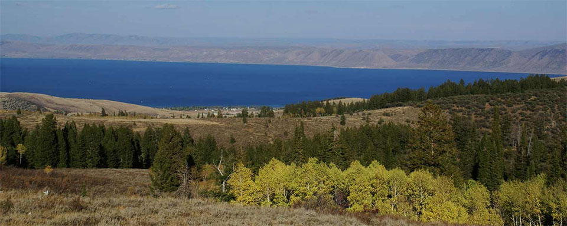
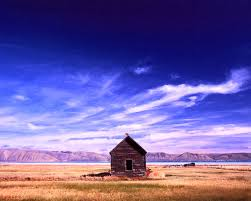

Fish Haven Idaho

Today's Weather
Currently:
High:
°F
Low:
°F
Wind Chill:
Humidity:
%
Wind Speed:
mph
Annual Events
5 Day Forecast

Fish Haven is Paradise
Kurt Friedeman
It's an undiscovered paradise. Most people who drive by
recognize the raw beauty of a place ringed by high desert
mountains and bordered by the shores of a vast natural lake.
In winter the hills outside this small paradise echo with
the sharp whine of snow machines and in the summer thousands
of tourists ply the lake's bright blue waters with water
skis or fishing poles.
But they don't live there. It's different living in Fish
Haven.
The little town sits just on the Idaho side of U.S. Highway
89 tucked in between Bear Lake's west side and the
mountains.
It's not technically a city or a town, it's really nothing
more than the proverbial wide spot in the road. But people
call it a town even though there isn't a city council, just
the Bear Lake County Commission that oversees development
there.
Only 50 to 100 people call it home, depending on the
weather.
Vic Tilt, co-owner of Gladys' Place, is one of the few
year-around residents and said the population drops quickly
when things get cold.
The winter evacuation isn't much of a worry for Tilt, 60,
because his store is the only one around. The nearest other
store is in Montpelier, about 45 minutes away.